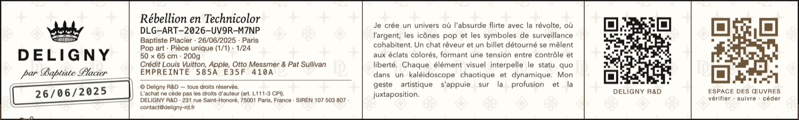
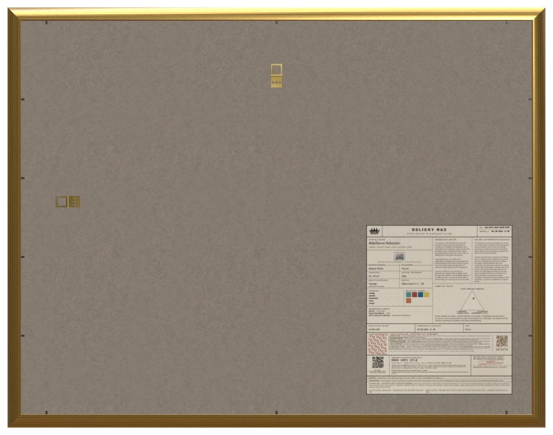

Recto


Verso — cartouche collé au dos



Un univers où l'absurde flirte avec la révolte : l'argent, les icônes pop et les symboles de surveillance y cohabitent. Un chat rêveur et un billet détourné se mêlent aux éclats colorés, dans une tension entre contrôle et liberté. Chaque élément interpelle le statu quo, comme dans un kaléidoscope chaotique et dynamique. Le geste repose sur la profusion et la juxtaposition. Collages multicolores et pochoirs précis rendent la complexité du discours visuel : une accumulation sans ordre apparent, qui reflète le tumulte urbain tout en le bousculant. L'œuvre ne dicte rien, elle présente. Au spectateur de naviguer dans ce dédale saturé d'images et de décider comment réagir face à un monde surchargé : un espace d'interprétation libre et critique, où chacun peut trouver sa vérité.
L'œuvre s'articule autour de tensions modernes avec un collage dense et disparate, évoquant la saturation médiatique et culturelle. Les lignes sinueuses et motifs répétitifs créent une composition chaotique mais rythmée. La palette vive de néons et de pastels contraste avec le noir et blanc des pochoirs. Réminiscences de l'art urbain, cet assemblage de symboles culturels, pop et subversifs comme la surveillance ou la révolte, insuffle un message provocateur. L'utilisation d'éléments iconiques détourne notre perception, conjuguant autodérision et critique sociale.
| Artiste principal | Baptiste Placier |
|---|---|
| Collection / style | Pop art |
| Création | 26/06/2025 (exacte) |
| Dimensions | 50 × 65 cm |
| Support / matériaux | 200g |
| Édition | Pièce unique (1/1) |
| Lieu de création | Paris |
| Techniques | collage, pochoir, impression, encre, crayon |
| Mots-clés | rébellion / pop art / chaos / coloré / symbole / urbain |
L’IA est une IA maison, entraînée sur les œuvres antérieures. Position indicative déclarée par l’artiste. L’IA intervient dans le processus (pour finaliser un pochoir, une image projetée ou un sticker). Les références identifiables sont créditées.
| élément | référence | artiste / origine | confiance |
|---|---|---|---|
| motif LV | motif Monogramme Louis Vuitton | Louis Vuitton | 100% |
| slogan Think Different | Think different, Apple 1997 | — | 100% |
| Felix le chat avec un télescope | Felix the Cat | Otto Messmer & Pat Sullivan | 100% |
| billet avec Benjamin Franklin et cornes | billet 100 USD | — | 100% |
| motif monogramme avec symboles et couleurs variées | motif monogramme Louis Vuitton | Louis Vuitton | 90% |
| cheval ailé stylisé | Pégase | — | 70% |
Emprunts documentés et validés par l'artiste (identification assistée par IA) — démarche de transparence, un crédit ne vaut pas autorisation.
| Algorithme | Ed25519 (RFC 8032) |
|---|---|
| SHA-256 du manifeste | 0be669fc9f165425dbcb3a23876c2e6b4637a5a040942ebddb86390fda325036 |
| Signature | abc1a593c04597827cd1f818a70bbefc9bffc4e9acc4a1863009779aac47968a1e9c672ae2ba47f4bad79a6ef1e3440c259e2c8cd2431d0311897ae599c84d0e |
| Clé publique | 74d295def0f077a57770d479a2e12f91ec09580ff0696a812620b8e078fc007f (cle-publique.txt) |